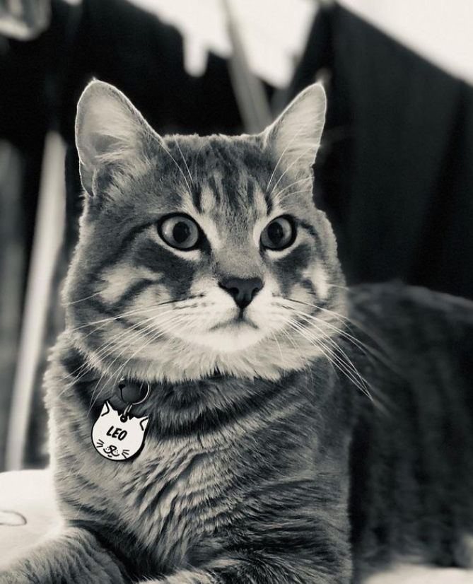
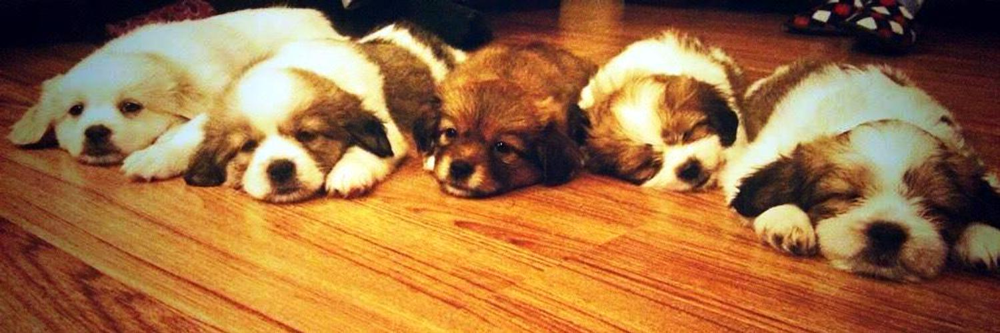

Aşağıdaki menüyü kullanarak site içerisinde gezebilirsiniz
| İsim |
Yaş |
Cinsiyet |
Doğum Yeri |
Yaşadığı Şehir |
Nihat Duysak |
36 |
Erkek |
İstanbul |
Hakkımdaki bilgileri kısaca özetlemek gerekirse
Merhaba! Ben Nihat Duysak, Acunmedya Akademi'de Frontend eğitimi almaya yeni başladım ve bu dijital dünyada kendi izimi bırakmak için heyecan doluyum.
Ancak kod yazmaktan daha fazlasını keşfetmeyi ve yaşamayı seviyorum. Kediler ve köpekler benim için özel bir yere sahiptir. Şu anda bir kedi dostum var, adı LEO.
Onunla geçirdiğim zaman benim için huzur kaynağıdır. Kedilerin ve köpeklerin sadakati ve sevgisi gerçekten kıymetlidir.
Mutfak benim için bir sanat alanıdır.
Yemek yapmayı ve yemeyi aynı derecede çok seviyorum. Farklı mutfakları keşfetmek, yeni tarifler denemek ve sevdiklerimle özel yemekler hazırlamak benim için
keyifli bir uğraşıdır. Yemeklerin birleştirici gücüne inanıyorum.
Spor yapmak, hayatımın bir parçasıdır. Yüzme sporunu yaparken hem fiziksel
hem de zihinsel olarak kendimi geliştirmekten büyük keyif alıyorum. Spor, hayatta hedefler koymamı ve disiplinli bir şekilde çalışmayı öğrenmeme yardımcı oluyor.
Ayrıca yeni yerler keşfetmekten büyük bir zevk alırım. Seyahat etmek, farklı kültürleri deneyimlemek ve dünyanın dört bir yanındaki güzellikleri keşfetmek beni
heyecanlandırır. Her yeni yer, benim için yeni bir maceranın kapısını aralar.
Sonuç olarak, ben Nihat, Frontend eğitimi almaya başlayan bir yolcu, bir kedi sever,
bir mutfak sanatçısı, bir sporcu ve bir keşif tutkunu olarak hayatın tadını çıkarmaya çalışan biriyim. Yeni şeyler öğrenmek ve deneyimlemek benim için önemlidir ve
bu yolculuğumda sizleri de yanımda görmekten mutluluk duyarım. Birlikte daha fazla deneyim paylaşmak için takipte kalın!

